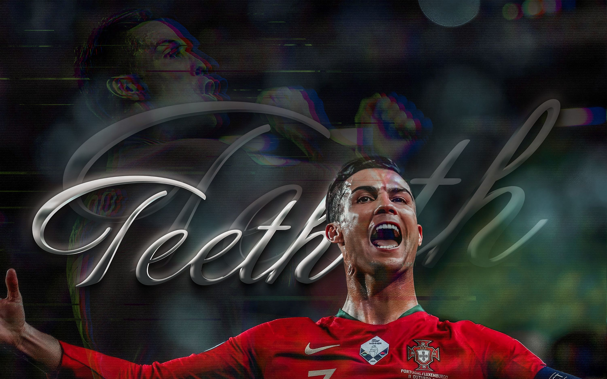

|  | |||||
| 首页 | 成长经历 | 职业生平 | 重要荣誉 | 精彩瞬间 | 精神与影响力 |
足坛最璀璨的巨星，绿茵场的刺客之王 ——克里斯蒂亚诺·罗纳尔多 |
|||||
C罗，这个在足球场上的传奇人物，用他的出色表现和无尽的魅力征服了无数球迷的心。 他在欧冠赛场上创下了141球42次助攻的神奇纪录，成为了欧冠历史上最伟大的球员之一。 他的职业生涯进球已经达到了850个，成为了历史射手王。 他在社交媒体上的粉丝量已经突破了6亿，是目前粉丝量最多的球星。 首先，让我们来谈谈C罗的身体魅力。他拥有出色的身体素质和惊人的球技，无论是在盘带、射门还是传球方面，C罗都展现出了惊人的能力。他的速度、力量、灵活性和准确性让他成为了一位出类拔萃的球员。 此外，C罗非常注重身体锻炼和保养，他的自律和毅力使得他在职业生涯中一直保持着巅峰状态。 人格魅力也是C罗吸引球迷的重要因素之一。他在场上总是充满斗志，对比赛充满热情。他是一位勤奋、努力、自信的球员，始终坚信自己能够取得成功。即使在面对困难和挑战时，C罗也敢于承担风险，不断突破自我。他的这种精神感染了无数人，让他们相信在人生中只要努力就能取得成功。 社交媒体影响力是现代明星不可忽视的一部分。C罗在社交媒体上拥有庞大的粉丝数，已经突破了6亿。他通过社交媒体与球迷互动，分享自己的生活和比赛心得。他的粉丝们也通过社交媒体了解他的动态，为自己喜欢的球员加油打气。C罗在社交媒体上的活跃让他与球迷之间的联系更加紧密，也让他的人气不断攀升。 综上所述，C罗最大的魅力在于他在足球场上的伟大表现和顽强拼搏的人格魅力。他拥有出色的身体素质和惊人的球技，同时也具备勤奋，努力，自律等人格特点。 他在社交媒体上的影响力也是他人气高涨的重要原因之一。C罗通过自己的努力和奉献在赛场内外都赢得了人们的尊重和喜爱，成为了一位真正的足球传奇。 |
“我们称之为‘GOAT’的克里斯蒂亚诺的来到这里，他在一月份来到这里。显然，这是一次重大的签约，他仍然有很多足球才华可以展示。从远处观察了六个月，我一直在关注克里斯蒂亚诺·罗纳尔多的成绩，观看了一些比赛和比赛集锦。” 当被问及谁是现代足球的最佳球员时，卡西利亚斯给出了一个简短而甜美的回答，他说：“克里斯蒂亚诺。” “如今，当你谈论足球时，你会提到内马尔、梅西和C罗。对我来说，克里斯蒂亚诺一直在努力提升自己，”卡洛斯在2017年接受福克斯体育采访时说，“我每天都观察他训练，他训练的方式令人兴奋。他每天都想提升自己。这就是他与梅西的不同之处。” C罗是目前最好的球员，他将职业足球世界中最难的两件事完美的融合在一起，风格和效率。我欣赏他的效率，他在场上担任边锋，却能进那么多球，真是太了不起。——温格 无论在哪个联赛，他都能一个赛季进50个球。他的很多方面都相当出色，能力、力量、射门、空中优势、关键球能力。——里皮 他是世界上最出色的球员，毫无疑问。他有着巨大的冲击力，当他启动的时候，你不知道他下一步会干什么。我对他充满了尊敬。——勒夫 |